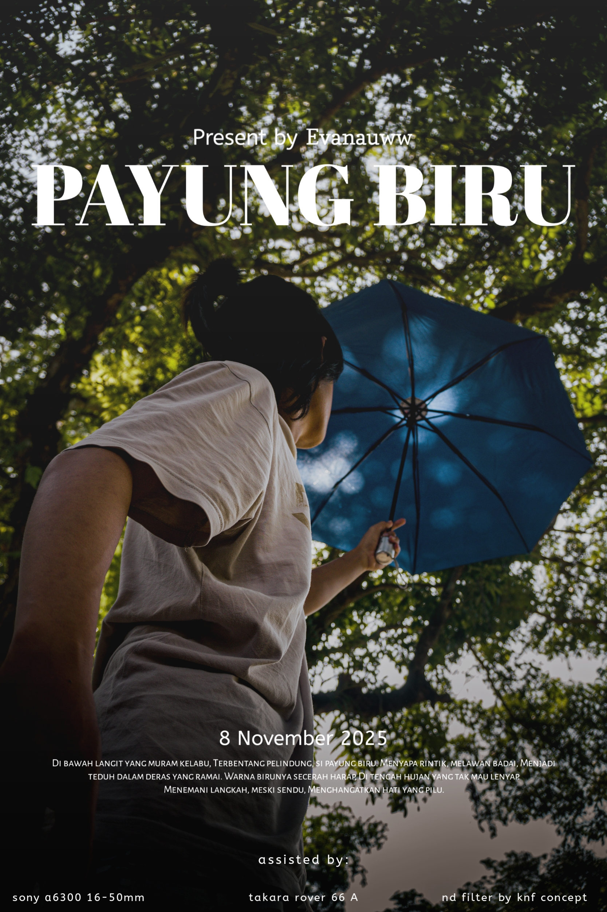
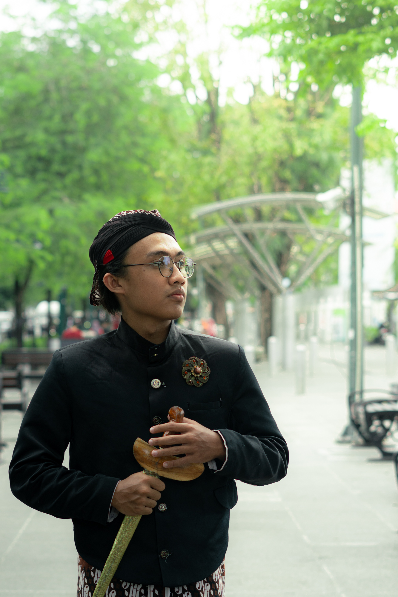

Halo, Perkenalkan Nama ku
Evan Aubin Wibowo
Aku adalah seorang mahasiswa dari Universitas Amikom Yogyakarta Hobiku adalah Fotografi dan juga mempelajari dunia digital Sekarang aku sedang mencoba untuk membuat web Portofolio
Riwayat Pendidikan :
- SD Negeri 4 Pakem
- SMP Negeri 1 Pakem
- SMA Negeri 1 Pakem
- Universitas Amikom Yogyakarta - Sistem Informasi
Keahlian
| Skill | Tingkat |
|---|---|
| HTML & CSS | Advanced |
| Fotografi | Intermediate |
| Videografi | Intermediate |
Video YoutubeKu
Galeri Foto

